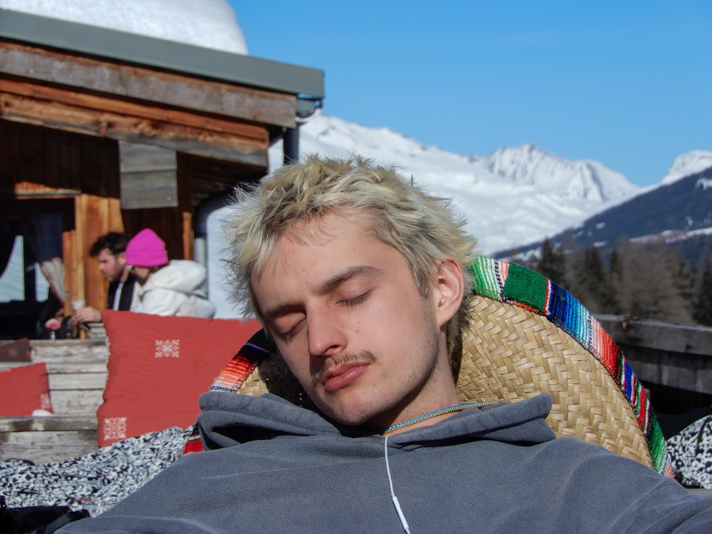

About Me

UX & Visual Design Student
My name is Rens Koster, and I am a 22-year-old Communication and Multimedia Design student with a strong focus on visual and UX design. I enjoy creating digital experiences that are clear, engaging, and easy to use. In my projects, I focus on understanding users first. I like doing research, creating personas, and testing designs to make sure my work actually works in real life, not just on screen.
Besides design, I am interested in music, movies, gaming, and sports. These interests influence my creativity and help me look at problems from different angles. And yes, I am always open to talk about them. Just send me a message.